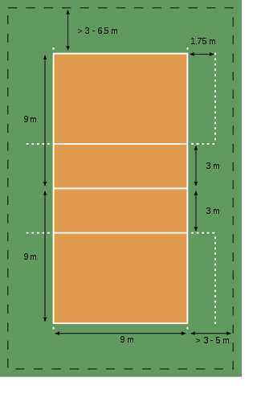

WELCOME TO MY FIRST WEBSITE
THE COURT DIMENSIONS.
THE COURT DIMENSIONS

|
- A volleyball court is 9 m × 18 m (29.5 ft × 59.1 ft), divided into equal square halves by a net with a width of one meter (39.4 in).[18] The top of the net is 2.43 m (7 ft 11+11⁄16 in) above the center of the court for men's competition, and 2.24 m (7 ft 4+3⁄16 in) for women's competition, varied for veterans and junior competitions.[3]
The minimum height clearance for indoor volleyball courts is 7 m (23.0 ft), although a clearance of 8 m (26.2 ft) is recommended.[18]
A line 3 m (9.8 ft) from and parallel to the net is considered the "attack line". This "3 meter" (or "10-foot") line divides the court into "back row" and "front row" areas (also back court and front court).[18] These are in turn divided into 3 areas each: these are numbered as follows, starting from area "1", which is the position of the serving player
After a team gains the serve (also known as siding out), its members must rotate in a clockwise direction, with the player previously in area "2" moving to area "1" and so on, with the player from area "1" moving to area "6".[3] Each player rotates only one time after the team gains possession of the service; the next time each player rotates will be after the other team wins possession of the ball and loses the point.[18]
The team courts are surrounded by an area called the free zone which is a minimum of 3 meters wide and which the players may enter and play within after the service of the ball.[19] All lines denoting the boundaries of the team court and the attack zone are drawn or painted within the dimensions of the area and are therefore a part of the court or zone. If a ball comes in contact with the line, the ball is considered to be "in". An antenna is placed on each side of the net perpendicular to the sideline and is a vertical extension of the side boundary of the court. A ball passing over the net must pass completely between the antennae (or their theoretical extensions to the ceiling) without contacting them.[3]
The ball
Main article: Volleyball (ball)
FIVB regulations state that the ball must be spherical, made of leather or synthetic leather, have a circumference of 65–67 cm (26–26 in), a weight of 260–280 g (9.2–9.9 oz) and an interior air pressure of 0.30–0.325 kg/cm2 (4.26 to 4.61 psi)(294.3 to 318.82 mbar or hPa).[20] Other governing bodies have similar regulations.
Gameplay